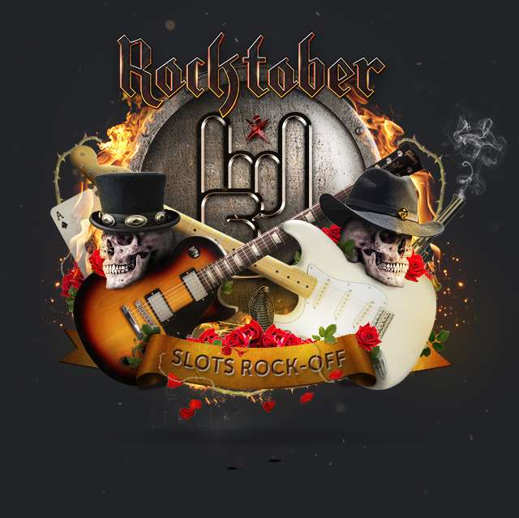
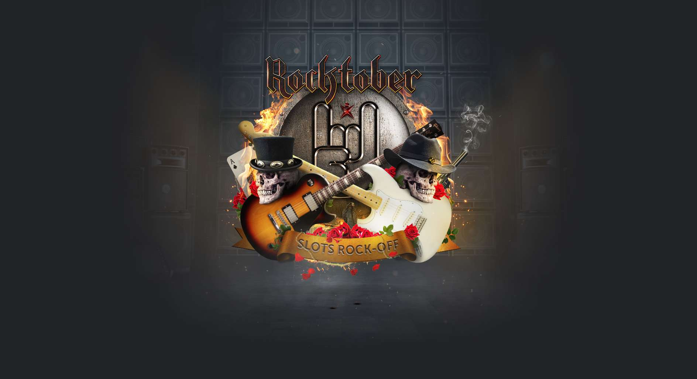

YOUR RESULT IS /19
You're a Rockstar! You now have a chance to win an authentic Motörhead™ darts board, an iPhone cover
or a Guns 'n Roses band t-shirt. All you need to do is register an account with Betsafe on the link and
you will automatically be included in the draw to win one of these exclusive prize! At Betsafe you can
also win Free Spins every day this Rocktober with our Daily Teaser for 500,000 Free Spins and a weekly
€5,000 Rocktober Tournament.
REGISTER AT BETSAFE TO JOIN THE DRAW